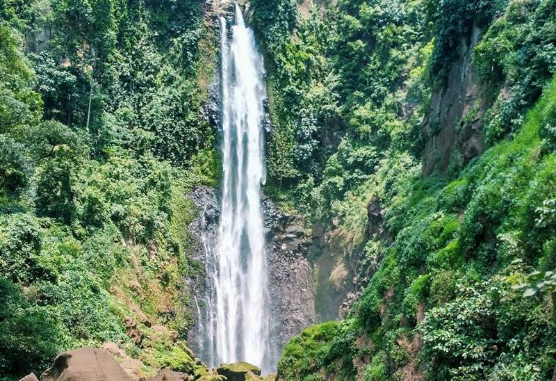

Seruni
Pantai Seruni terkenal dengan sunset indah, suasana santai, pemandangan laut yang cantik, pusat kuliner, serta area olahraga (sport center).

Eremerasa
Eremerasa memiliki pegunungan hijau, udara dingin, dan panorama alam yang sejuk. Serta memiliki permandian yang cukup terkenal

Loka
Loka terkenal sebagai kawasan wisata alam dengan suasana asri dan udara segar serta kawasan ini menyuguhkan hamparan kebun stroberi.